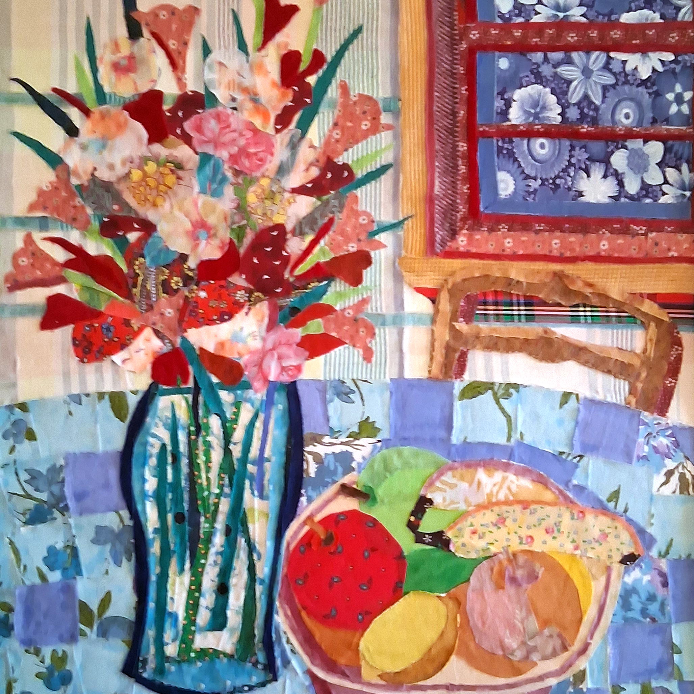
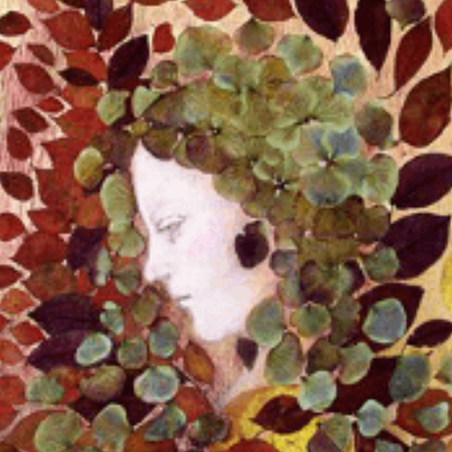
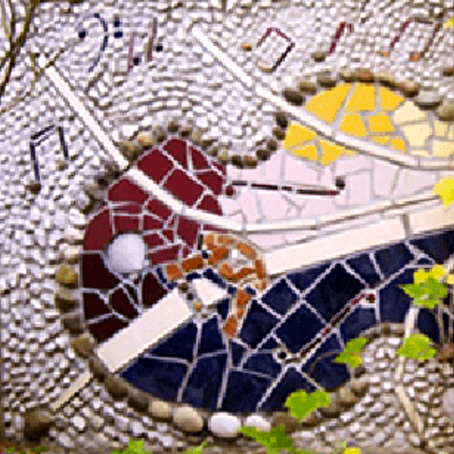
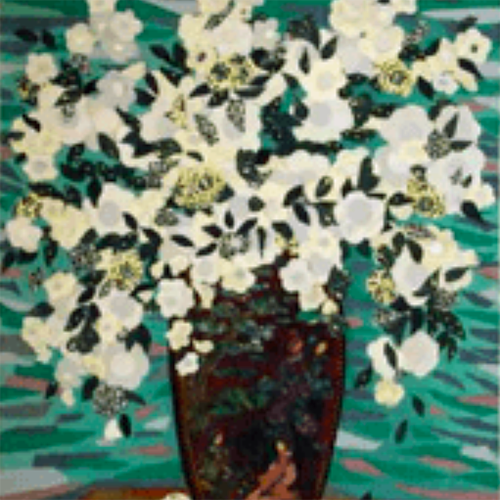
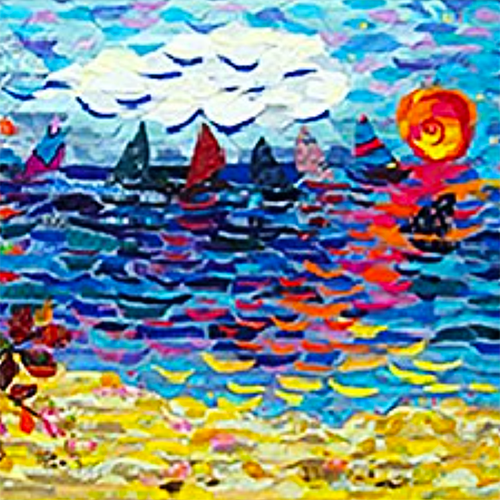
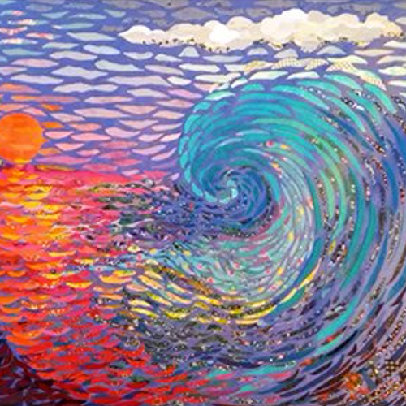
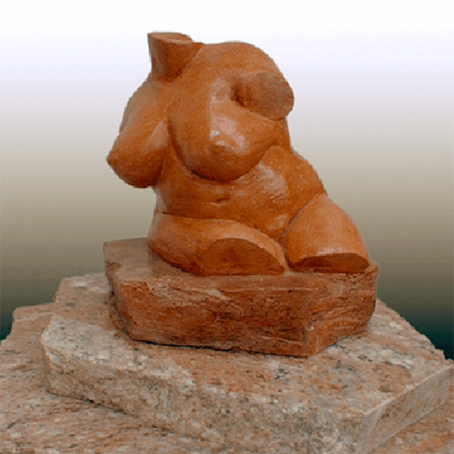
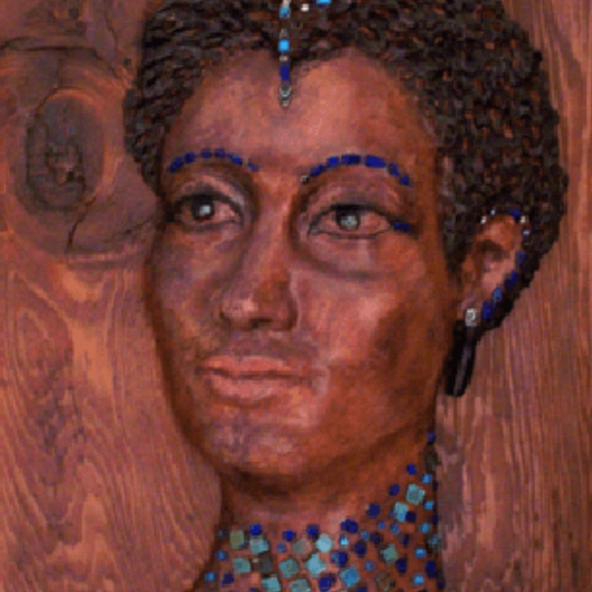
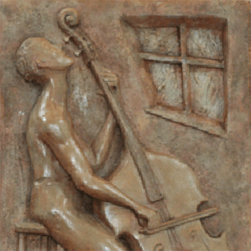
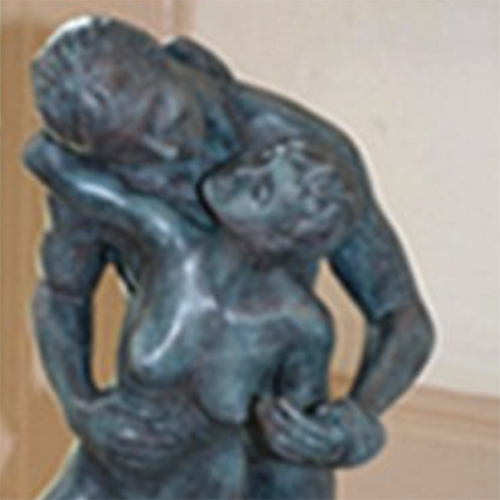

This is a series of mosaics, collages, paintings of mix materials and techniques, always looking to bring a new life to broken pieces, falling leaves, pieces of cloths, old ties or dresses, picked pebbles or found shells. Oddments, things left behind, remnants, unused samples are all recovered into one piece of art. Rita Ivanissevich






From a block of clay to a human soul, my sculptures and high-reliefs are my first and most intimate form of creation. They portray feelings and gestures, hold a single instant in time, embody inner battles, and express the challenge of love: A man carrying himself, Jonah longing to return to the womb of the whale, or a bass player’s music traveling beyond the window. Each sculpture reveals an emotion that reflects the observer’s own, a mutual contemplation of life. Rita Ivanissevich



